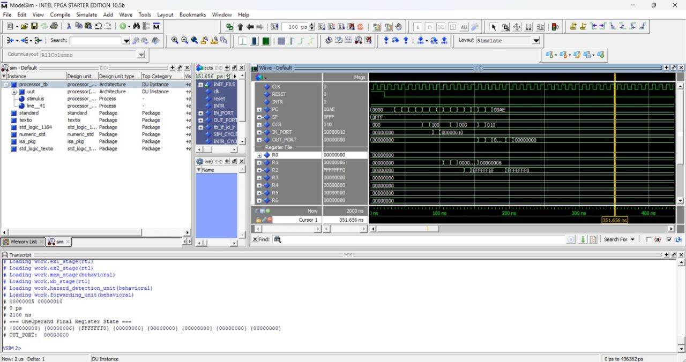
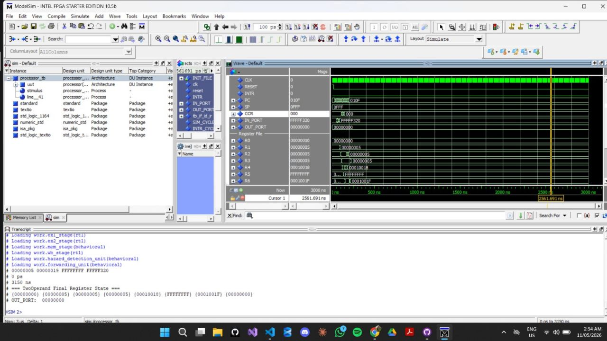

VHDL · ModelSim
6-stage Pipelined CPU
A six-stage processor that runs custom assembly and handles interrupts and pipeline hazards.




Resolving a memory hazard
Writing memory on the rising clock edge and reading it on the falling edge removed stalls caused by a structural hazard. The ModelSim captures show the signals and final register values for each test.